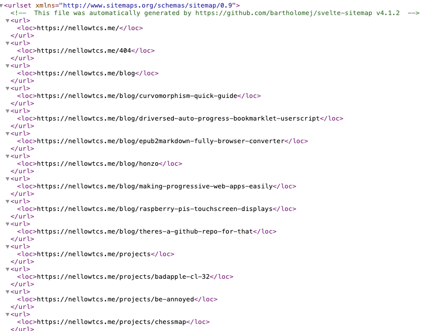

sitemap.xml
A sitemap is an XML file that lists all the pages on your site. It’s extremely useful for search engines, as it’s a easily parsible list of all your pages. It can also include images, videos and news articles.
The protocol is documented at sitemaps.org. I tried to follow this as closely as possible, but if you notice any discrepancies, please open an issue or PR!!!

sitemap.xml is generated at build time from the pages map. It lists every route that is not noindex and not in exclude.
Basic options
sitemap: {
exclude: ["/admin", "/login"],
maxUrls: 100_000,
defaultChangefreq: "weekly",
defaultPriority: 0.8,
siteUrl: "https://example.com",
}
exclude: routes to leave outmaxUrls: URLs per sitemap file. Default50000defaultChangefreq: fallback for pages without onedefaultPriority: fallback for pages without onesiteUrl: origin used to enforce a single-host sitemap
changefreq
Per-page or global and valid values: always, hourly, daily, weekly, monthly, yearly, never.
pages: {
"/blog/hello-world": { changefreq: "weekly", priority: 0.9 },
"/": { changefreq: "daily", priority: 1.0 },
}
maxUrls and splitting
Past maxUrls URLs, the plugin splits into multiple files: sitemap.xml, sitemap-1.xml, sitemap-2.xml, and so on. The index file lists them all and is the only one that you provide to Google Search Console or other search engine tools.
The default of 50000 is the sitemaps.org recommendation. Most sites should never hit it. Raise it if you have a large site and want fewer files!
Image namespace
When a page has openGraph.image (or structured images), the sitemap entry gets <image:image>:
<url>
<loc>https://example.com/blog/hello-world</loc>
<lastmod>2024-06-20</lastmod>
<changefreq>weekly</changefreq>
<priority>0.9</priority>
<image:image>
<image:loc>https://example.com/post.png</image:loc>
<image:title>Hello, world</image:title>
<image:caption>My first post on this site.</image:caption>
</image:image>
</url>
image:title comes from the page title. image:caption from the page description
Video namespace
When a page has openGraph.video, the sitemap entry gets <video:video>:
<url>
<loc>https://example.com/watch/trailer</loc>
<video:video>
<video:thumbnail_loc>https://example.com/thumb.png</video:thumbnail_loc>
<video:title>Trailer</video:title>
<video:description>Watch the trailer.</video:description>
<video:content_loc>https://example.com/trailer.mp4</video:content_loc>
<video:duration>142</video:duration>
</video:video>
</url>
A thumbnail is required for video entries! Pages without one are automatically skipped rather than emitting invalid XML.
News namespace
When a page sets openGraph.article.publishedTime, the sitemap entry gets a <news:news> block:
<url>
<loc>https://example.com/blog/breaking</loc>
<news:news>
<news:publication>
<news:name>My Site</news:name>
<news:language>en</news:language>
</news:publication>
<news:publication_date>2024-06-20</news:publication_date>
<news:title>Breaking</news:title>
</news:news>
</url>
xhtml:link alternates
Pages with hreflang alternates get <xhtml:link> entries in their sitemap URL:
<url>
<loc>https://example.com/</loc>
<xhtml:link rel="alternate" hreflang="en" href="https://example.com/"/>
<xhtml:link rel="alternate" hreflang="es" href="https://example.com/es/"/>
<xhtml:link rel="alternate" hreflang="x-default" href="https://example.com/"/>
</url>
Single-host enforcement
All sitemap URLs must share the same host as site.url. If a page canonical points elsewhere, the entry is skipped. This keeps the sitemap valid. Open an issue/PR if you want to allow cross-host sitemaps.